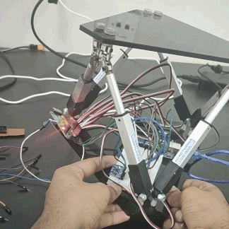

I’m an MS-Robotics engineering student at Ariona State University. I’ve an undergrad degree in Electrical & Electronics Engineering at Mahindra École Centrale in 2020.
I love Signal processing, Control theory & Perception systems as I program them into Embedded devices foir Robotic applications. One of my works includes an Autonomous Underwater Vehicle. For which, I designed the entire electrical system and wrote firmware for the feedback controllers. I had great fun implementing convoluted algorithms like optical flow, Kalman filters, and full state feedback to make the best out of run-of-the-mill hardware.
I enjoy creating small tools that are modular for every project I work on. This “Archive” will be my attempt at making all such tools and devices I made public, with good documentation.
|
Autonomous Underwater Vehicle (AUV) System
SAUVC 2020
Co-founder and Electrical-Software team lead for AUVMEC-2020. Designed and developed the
electronics and control subsystem for the AUV. Implemented high-level
control algorithms and safety systems with sensors for the semi-autonomous vehicle.
|
|
|
IMU Orientation Visualization using OpenGL
Wrote a simple tool that uses OpenGL and a serial interface with a RP-2040 mcu with an imu to visualize
the current orientation of the imu-board/device.
|
|
|  |
A Self Balancing Gough-Stewart Platform
A 6-axis Parallel Gough-Stewart Platform robot that can self-orient itself to counter gravity.
|